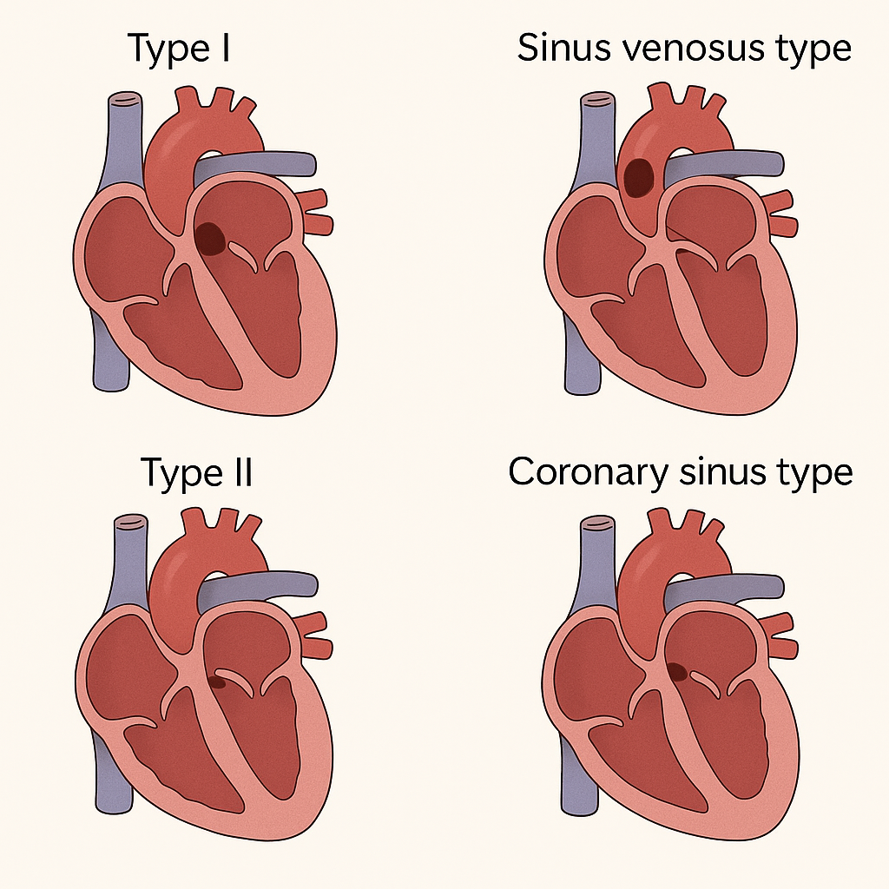

心房中膈缺損（Atrial Septal Defect）
13 April 2025
18:16
定義
心房中隔生長受損或過度吸收，導致心房中膈缺損，左右心房有交通
流行病學
成人最常見先天性心臟病
第三常見
的先天性心臟病
女
>
男
分類
Type I
：原孔型（
Ostium primum
）
佔
15–20%
發生於
心房中膈下部
常合併其他心臟缺陷，如
二尖瓣回流
Type II
：卵圓孔型
（
Ostium secundum
）
佔
70%
發生於
心房中膈中間位置
靜脈竇型（
Sinus venous type
）
罕見
又分為
上腔靜脈型和下腔靜脈型（上
>
下）
常合併部份靜脈回流異常
無頂蓋冠狀竇型（
Coronary sinus type
）
罕見
常合併左心房壁缺損

病因
Down syndrome
Fetal alochol syndrome
子宮內感染
：
TORCH
Holt-Oram syndrome
（
= Hand-Heart syndrome
）
體染色體顯性
（
AD
）
心房中隔缺損，合併
First degree
心臟傳導異常、橈骨缺失
病生理
通常為低壓力、低容量、輕微的左至右分流（
left-to-right shunt
），所以
病人大多無症狀
大型的心房中隔缺損會導致血液由左心房流向右心房，造成
右心房與右心室的負荷增加
，長期下來造成
右心房心室擴大
，並出現
代償性肥厚
。
嚴重時可能會發展成
Eisenmenger syndrome
，分流方向逆轉，並出現發紺。
臨床特徵
小型
ASD
：
大部分無症狀
中至大型
ASD
可以無症狀，但也可能進展到心臟衰竭
通常隨著年齡增長逐漸出現症狀
活動後呼吸困難、疲勞
反覆呼吸道感染
心悸：
supraventricular arrhythmias
暈厥
周邊水腫
：如發展成心衰竭
中風或短暫性腦缺血
：由
paradoxical embolism
引起
長期下來，會出現發紺，甚至進展成
Eisenmenger’s syndrome
診斷
心音聽診
收縮中期（
Mid-systolic
）
ejection murmur
左邊第二肋間聽到分裂且固定的第二心音（
Fixed widely split S2
）
Fixed
：表示不會隨著呼吸而改變
心臟超音波
：
確診
胸前心臟超音波檢查（
trans-thoracic echocardiography, TTE
）合併
Doppler
確認心房間有交通
心電圖（
EKG
）
右心室肥厚
心軸右偏
P
波高尖（
P pulmonale
）和
PR
延長（
prolonged
）
非完全右束傳導障礙（
Incomplete RBBB
）
，但不會造成
S1 split
心律不整
：
atrial fibrillation, atrial flutter
胸部
X
光
右心房、右心室及肺動脈擴大
肺紋增加
處置
大部份可自行癒合，
40%
的
ASD
會於
5
歲前自行癒合
小型或無症狀的
ASD
：可觀察、定期追蹤
手術治療
：
大型或有症狀
的
ASD
適應症
大型的左到右分流（
Large left-to-right shunts
）
：
Qp/Qs ratio >1.5
沒有肺動脈高壓
右心房或右心室肥大
心臟衰竭
Paradoxical embolism
Platypnea-orthodeoxia syndrome
禁忌症
發展成「右到左分流」（
Rt’ to Lt’ shunt
）
嚴重肺動脈高壓
若肺動脈阻力過高（
> 12 Wood units
），
不可馬上將
ASD
關閉，先使用藥物控制肺動脈高壓
Eisenmenger syndrome
手術方式
經導管封堵（
Transcatheter closure
）
只有
ASD type II
可用
可以用心導管關閉之缺損
：
VSD
、
PDA
、
ASD type II
不可使用
：
完全性心內膜墊異常
（
ASD type I + AV canal type VSD + AV valve insufficiency
）
人工
Patch
修補
傳統開心手術（
open repair
）
併發症
心室上心律不整（
supraventricular arrhythmias
）
心臟衰竭
Paradoxical embolism
血栓來自靜脈循環，經由
ASD
從右心房進入左心房，再進入動脈循環，若進入腦部血管會引發中風
肺動脈高壓
Eissenmenger’s syndrome
（
10%
）
Reference
Sabiston Textbook of Surgery 21st Edition
Schwartz's Principles of Surgery 11th Edition
Atrial Septal Defect, AMBOSS
使用 OneNote 建立。